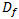

DAMAGE |
(Object Data) |
|
Update History: (New) Definition has been extended in v11 V11 – Integration Point output option has been added for 2D Quad element. |
Last updated on : 29-07-2013 |
DAMAGE Object, Ndata, DefDamage, Nnode, DefNodeDamage, nDim
(if “element” stress is requested for output, ELMNOD=0)
Element(1), Damage(1,1),...., Damage(NDim,1)
: :
Element(Ndata), Damage(1,Ndata),...., Damage(NDim,Ndata)
(if dual “element + nodal” stress is requested for output, ELMNOD=2)
Element(1), Damage(1,1),...., Damage(NDim,1)
: :
Element(Ndata), Damage(1,Ndata),....., Damage(NDim,Ndata)
Node(1), DamgNode(1,1),...., DamgNode(NDim,1)
: :
Node(Nnode),DamgNode(1, Nnode),...,DamgNode(NDim, Nnode)
or
(if “integration point” stress is requested for output, ELMNOD=3)
DAMAGE Object, Ndata, DefDamage, Nnode(=0), DefNodeDamage(=0.0), nDim, NIntPts
Element(1)
Damage(1,1,1),…..., Damage(NDim1,1)
: :
Damage(1, NIntPts,1),…..., Damage(NDim, NIntPts,1)
: :
Element(Ndata)
Damage(1,1, Ndata),…..., Damage(NDim,1, Ndata)
: :
Damage(1,NIntPts,Ndata),,...., Damage(Nmodes, NIntPts, Ndata)
|
OPERAND |
DESCRIPTION |
DEFAULT |
|
Object |
Object Number |
None |
|
NDim |
Number of (multiple) damage models |
1 |
|
Ndata |
Number of element/damage pairs |
None |
|
DefDamage |
Default elemental damage value |
0 |
|
Nnode |
Number of node/damage pairs |
None |
|
DefNodeDamage |
Default nodal damage value |
|
|
NIntPts |
Number of integration points per element = 4 Quadrilateral |
4 |
|
Element(i) |
Element number of ith data pair |
|
|
Node(i) |
Node number of ith data pair |
|
|
Damage(i) |
Average damage at ith element |
None |
|
Damage(i,j) |
Damage at ith integration point of jth element |
None |
|
DamgNode(i) |
Damage at ith node |
None |
|
Damage(k,i) |
Kth dimension of damage factor of ith element |
|
|
Damage(k,n,i) |
Kth dimension of damage factor of nth integration point of ith element |
|
|
DEFINITION |
|
DAMAGE specifies the damage factor at each element. |
|
REMARKS |
||
|
The damage factor can be used to predict fracture in cold forming operations. The damage factor increases as a material is deformed. Fracture occurs when the damage factor has reached its critical value. The critical value of the damage factor must be determined through physical experimentation. Damage factor  is defined by,
The keyword format varies based on damage output selection made at ELMNOD. For element output (ELMNOD = 0) option, damage at the centroid of each element is written. For dual output (ELMNOD = 2) option, damage at the centroid of element and damage at node are written. For integration point (ELMNOD = 3) option, damage values at four integration points in element are written.
Applicable object types: Plastic, Elastoplastic, and Porous. |
|
RELATED TOPICS |
| Related keywords: ELMNOD, FRCMOD |